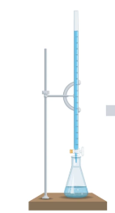

Chemistry Lab Experiments
Interactive learning platform for chemistry students
Experiment 2: Estimation of Calcium in CaCO3 Solution
Aim: To estimate the Ca2+ ions present in a given solution of CaCO. You are provided with pure crystals of Zinc Sulphate heptahydrate and approximately BIM EDTA salution.
Step 1: Collect All the materials requires for the experiment.
Audio explanation:
APPARATUS : Burette, Conical flask, etc
CHEMICALS : 0.1M EDTA Solution, Eriochrome Black T Indicator (EBT) , Buffer solution (pH=10), 0.1M Ca2+ ion solution , ZnSO4.7H2O (AR) crystals. c
Step 2: Titration I: Standardisation of EDTA Solution
Audio explanation:
About 2.87 g of ZnSO4.7H2O (AR) crystals are accurately weighed out and transferred into a 100 ml standard flask. The solution is made up to the mark and thoroughly shaken to get a homogeneous solution
Step 3: Calculation on Strength of EDTA solution

Audio explanation:
Prepare ZnSO4 and determine its strength with the folmula :
Strength of standard Zn2+ = weight (grams) * 1000/Mol. Mass of ZnSO4.7H20 * Volume
----
Observe the volume of EDTA run down the burette and calculate strength of EDTA solution by formula :
Strength of EDTA soln = vol of std ZnSO4 * strength of ZnSO4 / vol of EDTA soln
Step 4: Titration 2 : Estimation of Calcium
Audio explanation:
Exactly 10 ml of CaCO3 solution is pipetted out into a clean conical flask. Exactly 10 ml of buffer solution (pH-10) and 3 or 4 drops of Eriochrome Black Tindicator solution are added to it. It is titrated against standardised EDTA solution taken in the burette. At the end point there is a sharp change from wine red to a pure blue colour. The titration is repeated for concordancy. From the titre values, the strength of Ca ion solution and hence its amount is calculated.
Step 5: Calculation of Ca present in the solution
Audio explanation:
Calculate the molarity of the Ca2+ solution using the formula :
Molarity of Ca2+ solution = Vol of standardized EDTA Soln * strength of EDTA soln / Vol of Ca2+ Soln
Then Calculate the amount of Ca2+ present in the 100ml of given solution by the formula :
Amount of Ca2+ = (Molarity of Ca2+ soln * Atomic Mass of Ca * 100)/1000
------
This way you have successfully performed the experiment.
Quiz: Test Your Understanding
1. Which indicator is commonly used in the EDTA titration method for the estimation of calcium in a CaCO₃ solution?
2. In the estimation of calcium from a CaCO₃ solution using EDTA, the pH of the solution is maintained around?
3. What is the weight of urea used for the experiment?
4.What is the colour of the product?
Quiz Results
You scored 0 out of 4 (0%)